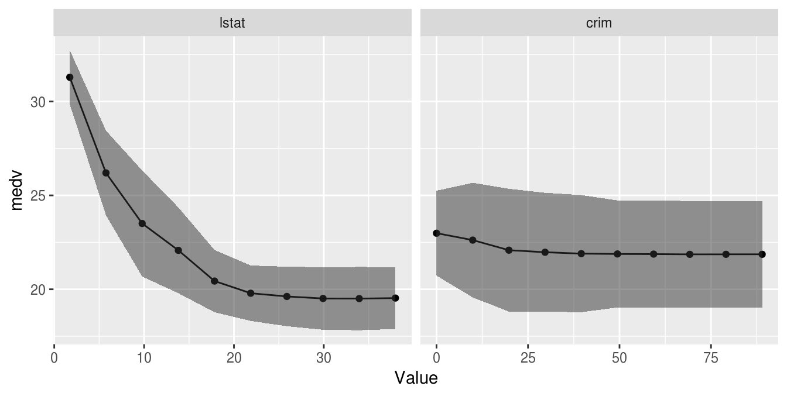
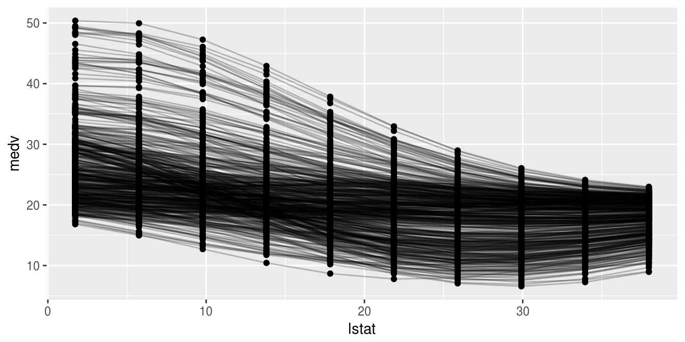
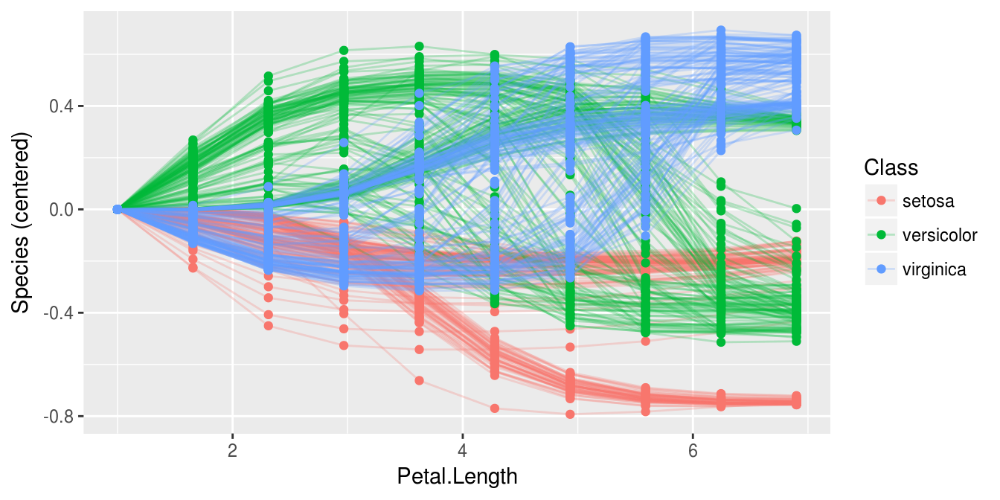
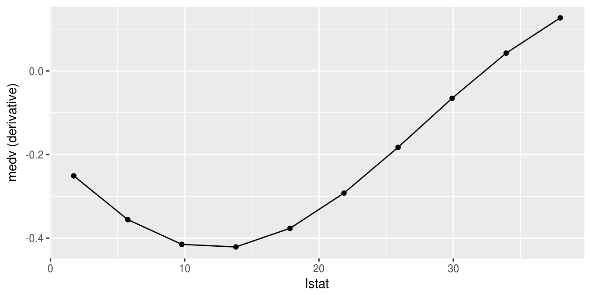
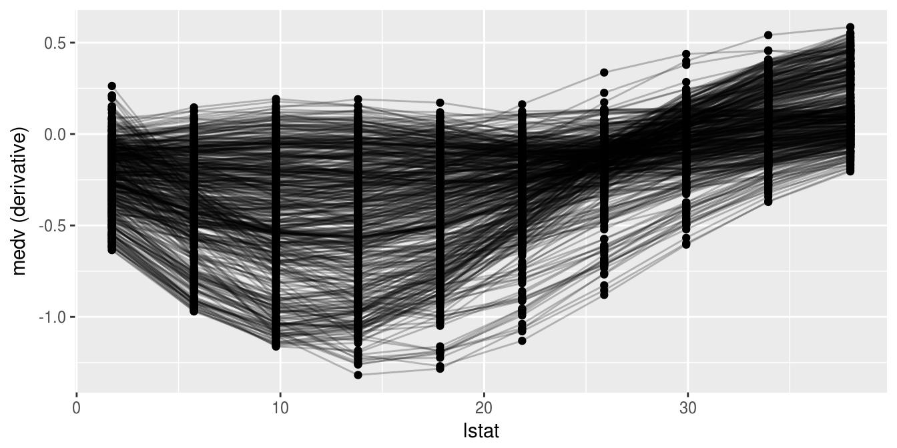
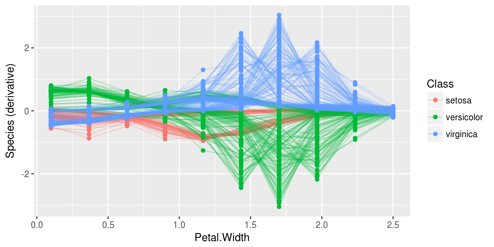
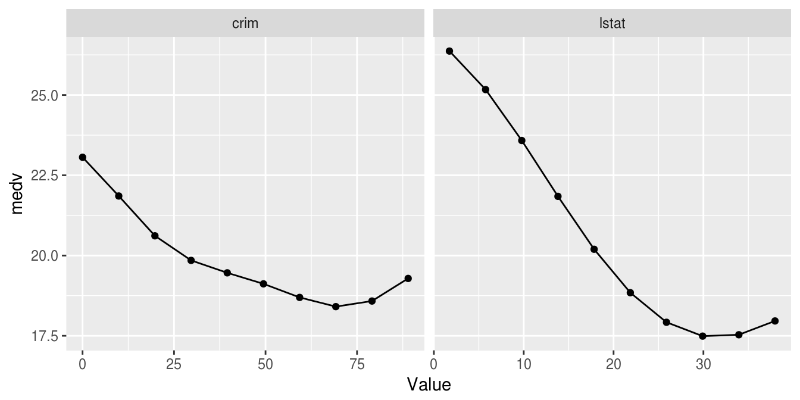
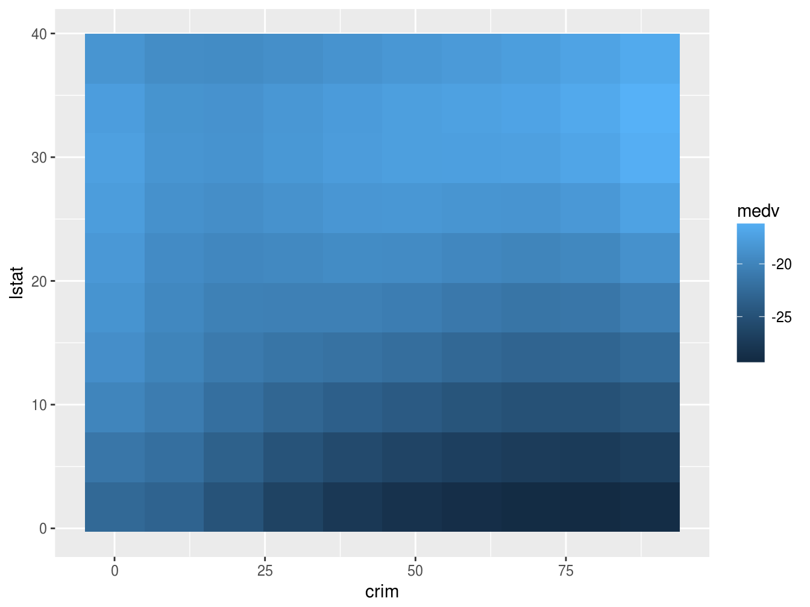

Exploring Learner Predictions
Learners use features to learn a prediction function and make predictions, but the effect of those features is often not apparent. [%mlr] can estimate the partial dependence of a learned function on a subset of the feature space using [&generatePartialDependenceData].
Partial dependence plots reduce the potentially high dimensional function estimated by the learner, and display a marginalized version of this function in a lower dimensional space. For example suppose \(Y = f(X) + \epsilon\), where \(\mathbb{E}[\epsilon|X] = 0\). With \((X, Y)\) pairs drawn independently from this statistical model, a learner may estimate \(\hat{f}\), which, if \(X\) is high dimensional, can be uninterpretable. Suppose we want to approximate the relationship between some subset of \(X\). We partition \(X\) into two sets, \(X_s\) and \(X_c\) such that \(X = X_s \cup X_c\), where \(X_s\) is a subset of \(X\) of interest.
The partial dependence of \(f\) on \(X_s\) is
\[f_{X_s} = \mathbb{E}_{X_c}f(X_s, X_c).\]
\(X_c\) is integrated out. We use the following estimator:
\[\hat{f}_{X_s} = \frac{1}{N} \sum_{i = 1}^N \hat{f}(X_s, x_{ic}).\]
The individual conditional expectation of an observation can also be estimated using the above algorithm absent the averaging, giving \(\hat{f}^{(i)}_{X_s}\). This allows the discovery of features of \(\hat{f}\) that may be obscured by an aggregated summary of \(\hat{f}\).
The partial derivative of the partial dependence function, \(\frac{\partial \hat{f}_{X_s}}{\partial X_s}\), and the individual conditional expectation function, \(\frac{\partial \hat{f}^{(i)}_{X_s}}{\partial X_s}\), can also be computed. For regression and survival tasks the partial derivative of a single feature \(X_s\) is the gradient of the partial dependence function, and for classification tasks where the learner can output class probabilities the Jacobian. Note that if the learner produces discontinuous partial dependence (e.g., piecewise constant functions such as decision trees, ensembles of decision trees, etc.) the derivative will be 0 (where the function is not changing) or trending towards positive or negative infinity (at the discontinuities where the derivative is undefined). Plotting the partial dependence function of such learners may give the impression that the function is not discontinuous because the prediction grid is not composed of all discontinuous points in the predictor space. This results in a line interpolating that makes the function appear to be piecewise linear (where the derivative would be defined except at the boundaries of each piece).
The partial derivative can be informative regarding the additivity of the learned function in certain features. If \(\hat{f}^{(i)}_{X_s}\) is an additive function in a feature \(X_s\), then its partial derivative will not depend on any other features (\(X_c\)) that may have been used by the learner. Variation in the estimated partial derivative indicates that there is a region of interaction between \(X_s\) and \(X_c\) in \(\hat{f}\). Similarly, instead of using the mean to estimate the expected value of the function at different values of \(X_s\), instead computing the variance can highlight regions of interaction between \(X_s\) and \(X_c\).
See Goldstein, Kapelner, Bleich, and Pitkin (2014) for more details and their package [%ICEbox] for the original implementation. The algorithm works for any supervised learner with classification, regression, and survival tasks.
Generating partial dependences
Our implementation, following [%mlr]’s visualization pattern, consists of the above mentioned function [&generatePartialDependenceData], as well as two visualization functions, [&plotPartialDependence] and [&plotPartialDependenceGGVIS]. The former generates input (objects of class [&PartialDependenceData]) for the latter.
The first step executed by [&generatePartialDependenceData] is to generate a feature grid for every element of the character vector features passed. The data are given by the input argument, which can be a [&Task] or a data.frame. The feature grid can be generated in several ways. A uniformly spaced grid of length gridsize (default 10) from the empirical minimum to the empirical maximum is created by default, but arguments fmin and fmax may be used to override the empirical default (the lengths of fmin and fmax must match the length of features). Alternatively the feature data can be resampled, either by using a bootstrap or by subsampling.
lrn.classif = makeLearner("classif.ksvm", predict.type = "prob")
fit.classif = train(lrn.classif, iris.task)
pd = generatePartialDependenceData(fit.classif, iris.task, "Petal.Width")
pd## PartialDependenceData
## Task: iris-example
## Features: Petal.Width
## Target: setosa, versicolor, virginica
## Derivative: FALSE
## Interaction: FALSE
## Individual: FALSE
## Class Probability Petal.Width
## 1 setosa 0.4959740 0.1000000
## 2 setosa 0.4478167 0.3666667
## 3 setosa 0.3836990 0.6333333
## 4 setosa 0.3216880 0.9000000
## 5 setosa 0.2477426 1.1666667
## 6 setosa 0.1739368 1.4333333
## ... (#rows: 30, #cols: 3)As noted above, \(X_s\) does not have to be unidimensional. If it is not, the interaction flag must be set to TRUE. Then the individual feature grids are combined using the Cartesian product, and the estimator above is applied, producing the partial dependence for every combination of unique feature values. If the interaction flag is FALSE (the default) then by default \(X_s\) is assumed unidimensional, and partial dependencies are generated for each feature separately. The resulting output when interaction = FALSE has a column for each feature, and NA where the feature was not used.
pd.lst = generatePartialDependenceData(fit.classif, iris.task, c("Petal.Width", "Petal.Length"), FALSE)
head(pd.lst$data)## Class Probability Petal.Width Petal.Length
## 1 setosa 0.4959740 0.1000000 NA
## 2 setosa 0.4478167 0.3666667 NA
## 3 setosa 0.3836990 0.6333333 NA
## 4 setosa 0.3216880 0.9000000 NA
## 5 setosa 0.2477426 1.1666667 NA
## 6 setosa 0.1739368 1.4333333 NAtail(pd.lst$data)## Class Probability Petal.Width Petal.Length
## 55 virginica 0.2055802 NA 3.622222
## 56 virginica 0.3169898 NA 4.277778
## 57 virginica 0.4405877 NA 4.933333
## 58 virginica 0.5991507 NA 5.588889
## 59 virginica 0.7122181 NA 6.244444
## 60 virginica 0.7239342 NA 6.900000pd.int = generatePartialDependenceData(fit.classif, iris.task, c("Petal.Width", "Petal.Length"), TRUE)
pd.int## PartialDependenceData
## Task: iris-example
## Features: Petal.Width, Petal.Length
## Target: setosa, versicolor, virginica
## Derivative: FALSE
## Interaction: TRUE
## Individual: FALSE
## Class Probability Petal.Width Petal.Length
## 1 setosa 0.6642777 0.1000000 1
## 2 setosa 0.6599740 0.3666667 1
## 3 setosa 0.6242010 0.6333333 1
## 4 setosa 0.5523477 0.9000000 1
## 5 setosa 0.4497208 1.1666667 1
## 6 setosa 0.3528327 1.4333333 1
## ... (#rows: 300, #cols: 4)At each step in the estimation of \(\hat{f}_{X_s}\) a set of predictions of length \(N\) is generated. By default the mean prediction is used. For classification where predict.type = "prob" this entails the mean class probabilities. However, other summaries of the predictions may be used. For regression and survival tasks the function used here must either return one number or three, and, if the latter, the numbers must be sorted lowest to highest. For classification tasks the function must return a number for each level of the target feature.
As noted, the fun argument can be a function which returns three numbers (sorted low to high) for a regression task. This allows further exploration of relative feature importance. If a feature is relatively important, the bounds are necessarily tighter because the feature accounts for more of the variance of the predictions, i.e., it is “used” more by the learner. More directly setting fun = var identifies regions of interaction between \(X_s\) and \(X_c\).
lrn.regr = makeLearner("regr.ksvm")
fit.regr = train(lrn.regr, bh.task)
pd.regr = generatePartialDependenceData(fit.regr, bh.task, "lstat", fun = median)
pd.regr## PartialDependenceData
## Task: BostonHousing-example
## Features: lstat
## Target: medv
## Derivative: FALSE
## Interaction: FALSE
## Individual: FALSE
## medv lstat
## 1 24.80779 1.730000
## 2 23.73532 5.756667
## 3 22.34207 9.783333
## 4 20.69454 13.810000
## 5 19.58268 17.836667
## 6 19.07731 21.863333
## ... (#rows: 10, #cols: 2)pd.ci = generatePartialDependenceData(fit.regr, bh.task, "lstat",
fun = function(x) quantile(x, c(.25, .5, .75)))
pd.ci## PartialDependenceData
## Task: BostonHousing-example
## Features: lstat
## Target: medv
## Derivative: FALSE
## Interaction: FALSE
## Individual: FALSE
## medv lstat lower upper
## 1 24.80779 1.730000 21.38229 29.55921
## 2 23.73532 5.756667 20.81318 27.57448
## 3 22.34207 9.783333 19.97765 25.12151
## 4 20.69454 13.810000 18.71700 23.61970
## 5 19.58268 17.836667 16.52383 22.88743
## 6 19.07731 21.863333 15.01283 22.12011
## ... (#rows: 10, #cols: 4)pd.classif = generatePartialDependenceData(fit.classif, iris.task, "Petal.Length", fun = median)
pd.classif## PartialDependenceData
## Task: iris-example
## Features: Petal.Length
## Target: setosa, versicolor, virginica
## Derivative: FALSE
## Interaction: FALSE
## Individual: FALSE
## Class Probability Petal.Length
## 1 setosa 0.29597142 1.000000
## 2 setosa 0.24195821 1.655556
## 3 setosa 0.17772348 2.311111
## 4 setosa 0.10234597 2.966667
## 5 setosa 0.05036746 3.622222
## 6 setosa 0.02539487 4.277778
## ... (#rows: 30, #cols: 3)In addition to bounds based on a summary of the distribution of the conditional expectation of each observation, learners which can estimate the variance of their predictions can also be used. The argument bounds is a numeric vector of length two which is added (so the first number should be negative) to the point prediction to produce a confidence interval for the partial dependence. The default is the .025 and .975 quantiles of the Gaussian distribution.
fit.se = train(makeLearner("regr.randomForest", predict.type = "se"), bh.task)
pd.se = generatePartialDependenceData(fit.se, bh.task, c("lstat", "crim"))
head(pd.se$data)## medv lstat crim lower upper
## 1 30.99479 1.730000 NA 25.47479 36.51480
## 2 26.06118 5.756667 NA 23.20629 28.91606
## 3 23.52056 9.783333 NA 20.54737 26.49375
## 4 22.18410 13.810000 NA 19.74374 24.62447
## 5 20.51749 17.836667 NA 18.32903 22.70594
## 6 19.91432 21.863333 NA 17.55457 22.27407tail(pd.se$data)## medv lstat crim lower upper
## 15 21.72199 NA 39.54849 19.41828 24.02571
## 16 21.71229 NA 49.43403 19.41783 24.00675
## 17 21.69485 NA 59.31957 19.42240 23.96730
## 18 21.68591 NA 69.20512 19.32835 24.04346
## 19 21.69516 NA 79.09066 19.35311 24.03722
## 20 21.69516 NA 88.97620 19.35311 24.03722As previously mentioned if the aggregation function is not used, i.e., it is the identity, then the conditional expectation of \(\hat{f}^{(i)}_{X_s}\) is estimated. If individual = TRUE then [&generatePartialDependenceData] returns \(n\) partial dependence estimates made at each point in the prediction grid constructed from the features.
pd.ind.regr = generatePartialDependenceData(fit.regr, bh.task, "lstat", individual = TRUE)
pd.ind.regr## PartialDependenceData
## Task: BostonHousing-example
## Features: lstat
## Target: medv
## Derivative: FALSE
## Interaction: FALSE
## Individual: TRUE
## Predictions centered: FALSE
## medv lstat idx
## 1 26.44418 1.730000 1
## 2 25.47349 5.756667 1
## 3 24.35025 9.783333 1
## 4 23.26740 13.810000 1
## 5 22.32911 17.836667 1
## 6 21.55881 21.863333 1
## ... (#rows: 5060, #cols: 3)The resulting output, particularly the element data in the returned object, has an additional column idx which gives the index of the observation to which the row pertains.
For classification tasks this index references both the class and the observation index.
pd.ind.classif = generatePartialDependenceData(fit.classif, iris.task, "Petal.Length", individual = TRUE)
pd.ind.classif## PartialDependenceData
## Task: iris-example
## Features: Petal.Length
## Target: setosa, versicolor, virginica
## Derivative: FALSE
## Interaction: FALSE
## Individual: TRUE
## Predictions centered: FALSE
## Class Probability Petal.Length idx
## 1 setosa 0.9795567 1 1.setosa
## 2 setosa 0.9717181 1 2.setosa
## 3 setosa 0.9799993 1 3.setosa
## 4 setosa 0.9777752 1 4.setosa
## 5 setosa 0.9787674 1 5.setosa
## 6 setosa 0.9730464 1 6.setosa
## ... (#rows: 4500, #cols: 4)Individual estimates of partial dependence can also be centered by predictions made at all \(n\) observations for a particular point in the prediction grid created by the features. This is controlled by the argument center which is a list of the same length as the length of the features argument and contains the values of the features desired.
iris = getTaskData(iris.task)
pd.ind.classif = generatePartialDependenceData(fit.classif, iris.task, "Petal.Length", individual = TRUE,
center = list("Petal.Length" = min(iris$Petal.Length)))Partial derivatives can also be computed for individual partial dependence estimates and aggregate partial dependence. This is restricted to a single feature at a time. The derivatives of individual partial dependence estimates can be useful in finding regions of interaction between the feature for which the derivative is estimated and the features excluded.
pd.regr.der = generatePartialDependenceData(fit.regr, bh.task, "lstat", derivative = TRUE)
head(pd.regr.der$data)## medv lstat
## 1 -0.2224145 1.730000
## 2 -0.3553523 5.756667
## 3 -0.4303459 9.783333
## 4 -0.4365639 13.810000
## 5 -0.3814012 17.836667
## 6 -0.2826658 21.863333pd.regr.der.ind = generatePartialDependenceData(fit.regr, bh.task, "lstat", derivative = TRUE,
individual = TRUE)
head(pd.regr.der.ind$data)## medv lstat idx
## 1 -0.2032234 1.730000 1
## 2 -0.2693321 5.756667 1
## 3 -0.2803083 9.783333 1
## 4 -0.2532712 13.810000 1
## 5 -0.2120500 17.836667 1
## 6 -0.1709574 21.863333 1pd.classif.der = generatePartialDependenceData(fit.classif, iris.task, "Petal.Width", derivative = TRUE)
head(pd.classif.der$data)## Class Probability Petal.Width
## 1 setosa -0.1182660 0.1000000
## 2 setosa -0.2309018 0.3666667
## 3 setosa -0.2343892 0.6333333
## 4 setosa -0.2460420 0.9000000
## 5 setosa -0.2995409 1.1666667
## 6 setosa -0.2322217 1.4333333pd.classif.der.ind = generatePartialDependenceData(fit.classif, iris.task, "Petal.Width", derivative = TRUE,
individual = TRUE)
head(pd.classif.der.ind$data)## Class Probability Petal.Width idx
## 1 setosa 0.03004089 0.1 1.setosa
## 2 setosa 0.02097302 0.1 2.setosa
## 3 setosa 0.01936817 0.1 3.setosa
## 4 setosa 0.01803303 0.1 4.setosa
## 5 setosa 0.03128522 0.1 5.setosa
## 6 setosa 0.04538264 0.1 6.setosaFunctional ANOVA
Hooker (2004) proposed the decomposition of a learned function \(\hat{f}\) as a sum of lower dimensional functions \[f(\mathbf{x}) = g_0 + \sum_{i = 1}^p g_{i}(X_i) + \sum_{i \neq j} g_{ij}(x_{ij}) + \ldots\] where \(p\) is the number of features. [&generateFunctionalANOVAData] estimates the individual \(g\) functions using partial dependence. When functions depend only on one feature, they are equivalent to partial dependence, but a \(g\) function which depends on more than one feature is the “effect” of only those features: lower dimensional “effects” are removed.
\[\hat{g}_u(X) = \frac{1}{N} \sum_{i = 1}^N \left( \hat{f}(X) - \sum_{v \subset u} g_v(X) \right)\]
Here \(u\) is a subset of \({1, \ldots, p}\). When \(|v| = 1\) \(g_v\) can be directly computed by computing the bivariate partial dependence of \(\hat{f}\) on \(X_u\) and then subtracting off the univariate partial dependences of the features contained in \(v\).
Although this decomposition is generalizable to classification it is currently only available for regression tasks.
lrn.regr = makeLearner("regr.ksvm")
fit.regr = train(lrn.regr, bh.task)
fa = generateFunctionalANOVAData(fit.regr, bh.task, "lstat", depth = 1, fun = median)
fa## FunctionalANOVAData
## Task: BostonHousing-example
## Features: lstat
## Target: medv
##
##
## effect medv lstat
## 1 lstat 24.90855 1.730000
## 2 lstat 23.73569 5.756667
## 3 lstat 22.35616 9.783333
## 4 lstat 20.71120 13.810000
## 5 lstat 19.62254 17.836667
## 6 lstat 19.04598 21.863333
## ... (#rows: 10, #cols: 3)pd.regr = generatePartialDependenceData(fit.regr, bh.task, "lstat", fun = median)
pd.regr## PartialDependenceData
## Task: BostonHousing-example
## Features: lstat
## Target: medv
## Derivative: FALSE
## Interaction: FALSE
## Individual: FALSE
## medv lstat
## 1 24.90855 1.730000
## 2 23.73569 5.756667
## 3 22.35616 9.783333
## 4 20.71120 13.810000
## 5 19.62254 17.836667
## 6 19.04598 21.863333
## ... (#rows: 10, #cols: 2)The depth argument is similar to the interaction argument in [&generatePartialDependenceData] but instead of specifying whether all of joint “effect” of all the features is computed, it determines whether “effects” of all subsets of the features given the specified depth are computed. So, for example, with \(p\) features and depth 1, the univariate partial dependence is returned. If, instead, depth = 2, then all possible bivariate functional ANOVA effects are returned. This is done by computing the univariate partial dependence for each feature and subtracting it from the bivariate partial dependence for each possible pair.
fa.bv = generateFunctionalANOVAData(fit.regr, bh.task, c("crim", "lstat", "age"),
depth = 2)
fa.bv## FunctionalANOVAData
## Task: BostonHousing-example
## Features: crim, lstat, age
## Target: medv
##
##
## effect medv crim lstat age
## 1 crim:lstat -22.69815 0.006320 1.73 NA
## 2 crim:lstat -23.21917 9.891862 1.73 NA
## 3 crim:lstat -24.84849 19.777404 1.73 NA
## 4 crim:lstat -26.52745 29.662947 1.73 NA
## 5 crim:lstat -27.61873 39.548489 1.73 NA
## 6 crim:lstat -28.21474 49.434031 1.73 NA
## ... (#rows: 300, #cols: 5)names(table(fa.bv$data$effect)) ## interaction effects estimated## [1] "crim:age" "crim:lstat" "lstat:age"Plotting partial dependences
Results from [&generatePartialDependenceData] and [&generateFunctionalANOVAData] can be visualized with [&plotPartialDependence] and [&plotPartialDependenceGGVIS].
With one feature and a regression task the output is a line plot, with a point for each point in the corresponding feature’s grid.
plotPartialDependence(pd.regr)
With a classification task, a line is drawn for each class, which gives the estimated partial probability of that class for a particular point in the feature grid.
plotPartialDependence(pd.classif)
For regression tasks, when the fun argument of [&generatePartialDependenceData] is used, the bounds will automatically be displayed using a gray ribbon.
plotPartialDependence(pd.ci)
The same goes for plots of partial dependences where the learner has predict.type = "se".
plotPartialDependence(pd.se)
When multiple features are passed to [&generatePartialDependenceData] but interaction = FALSE, facetting is used to display each estimated bivariate relationship.
plotPartialDependence(pd.lst)
When interaction = TRUE in the call to [&generatePartialDependenceData], one variable must be chosen to be used for facetting, and a subplot for each value in the chosen feature’s grid is created, wherein the other feature’s partial dependences within the facetting feature’s value are shown. Note that this type of plot is limited to two features.
plotPartialDependence(pd.int, facet = "Petal.Length")
[&plotPartialDependenceGGVIS] can be used similarly, however, since [%ggvis] currently lacks subplotting/facetting capabilities, the argument interact maps one feature to an interactive sidebar where the user can select a value of one feature.
plotPartialDependenceGGVIS(pd.int, interact = "Petal.Length")When individual = TRUE each individual conditional expectation curve is plotted.
plotPartialDependence(pd.ind.regr)
When the individual curves are centered by subtracting the individual conditional expectations estimated at a particular value of \(X_s\) this results in a fixed intercept which aids in visualizing variation in predictions made by \(\hat{f}^{(i)}_{X_s}\).
plotPartialDependence(pd.ind.classif)
Plotting partial derivative functions works the same as partial dependence. Below are estimates of the derivative of the mean aggregated partial dependence function, and the individual partial dependence functions for a regression and a classification task respectively.
plotPartialDependence(pd.regr.der)
This suggests that \(\hat{f}\) is not additive in lstat except in the neighborhood of \(25\).
plotPartialDependence(pd.regr.der.ind)
This suggests that Petal.Width interacts with some other feature in the neighborhood of \((1.5, 2)\) for classes “virginica” and “versicolor”.
plotPartialDependence(pd.classif.der.ind)
Output from [&generateFunctionalANOVAData] can also be plotted using [&plotPartialDependence].
fa = generateFunctionalANOVAData(fit.regr, bh.task, c("crim", "lstat"), depth = 1)
plotPartialDependence(fa)
Interactions can often be more easily visualized by using functional ANOVA.
fa.bv = generateFunctionalANOVAData(fit.regr, bh.task, c("crim", "lstat"), depth = 2)
plotPartialDependence(fa.bv, "tile")